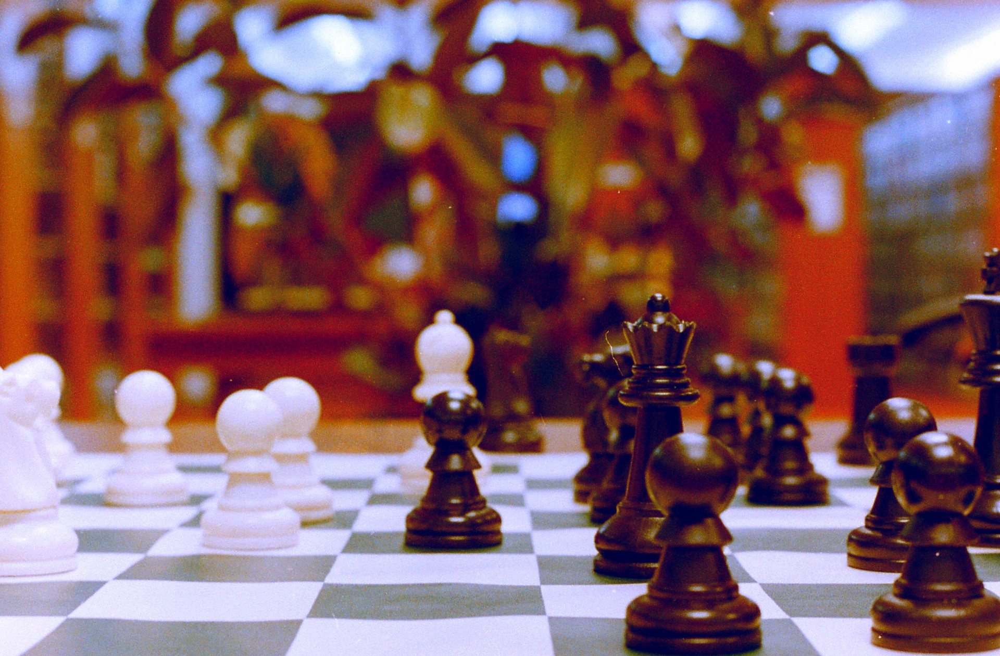

Becoming a Better Player 
Chess is a great way to improve critical thinking skills, problem solving, and just an all around fun game to learn. Improving takes time and practice, but the results can be seen as your game will become stronger with even a little effort.
Some tips to become a better player
- Practice with a friend
- Purchase a book on openings
- Study or just watch famous games on online
- Complete challenges and puzzles
- Familiarize yourself with common positions
- Learn combinations and positional tactics
Some helpful links
Daily Chess Puzzle
Play Online